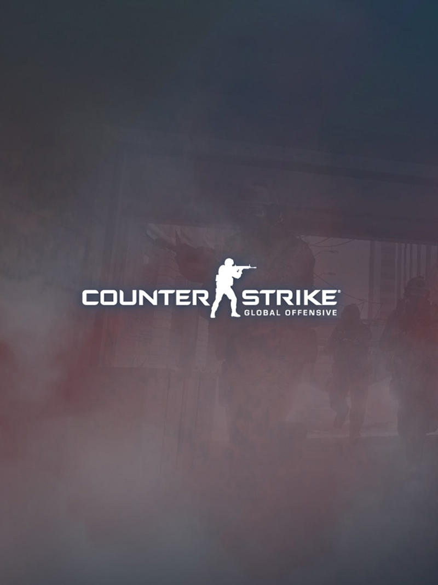

Поради, які допоможуть поліпшити свою гру в CS: GO
Багато гравців в якийсь момент часу зупиняються в розвитку. На цьому етапі багато закидають гру. Однак не варто приймати поспішні рішення. Досить прочитати поради, які допоможуть вам поліпшити свою гру в CS: GO.
